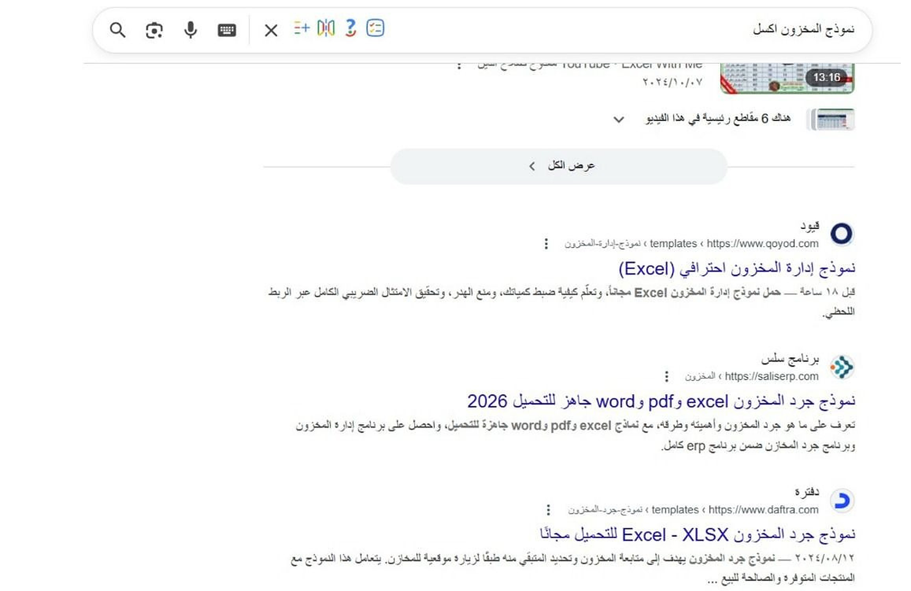
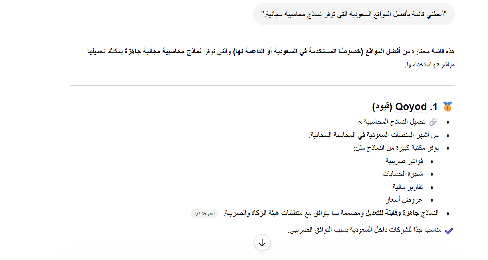
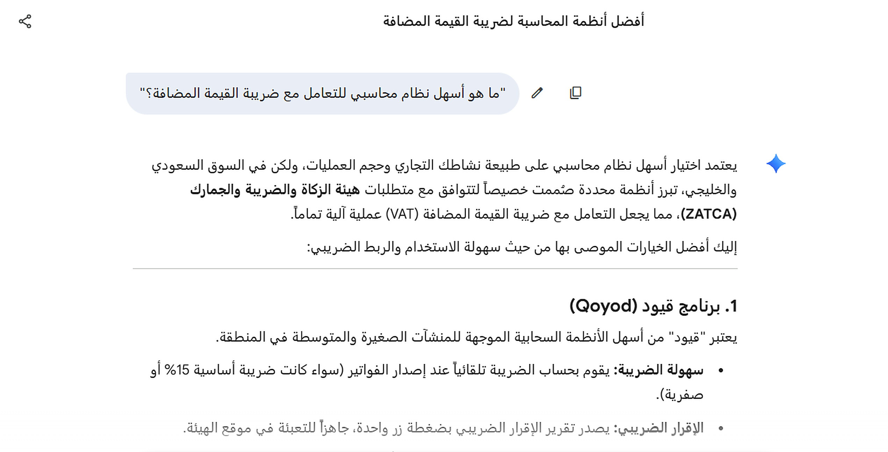
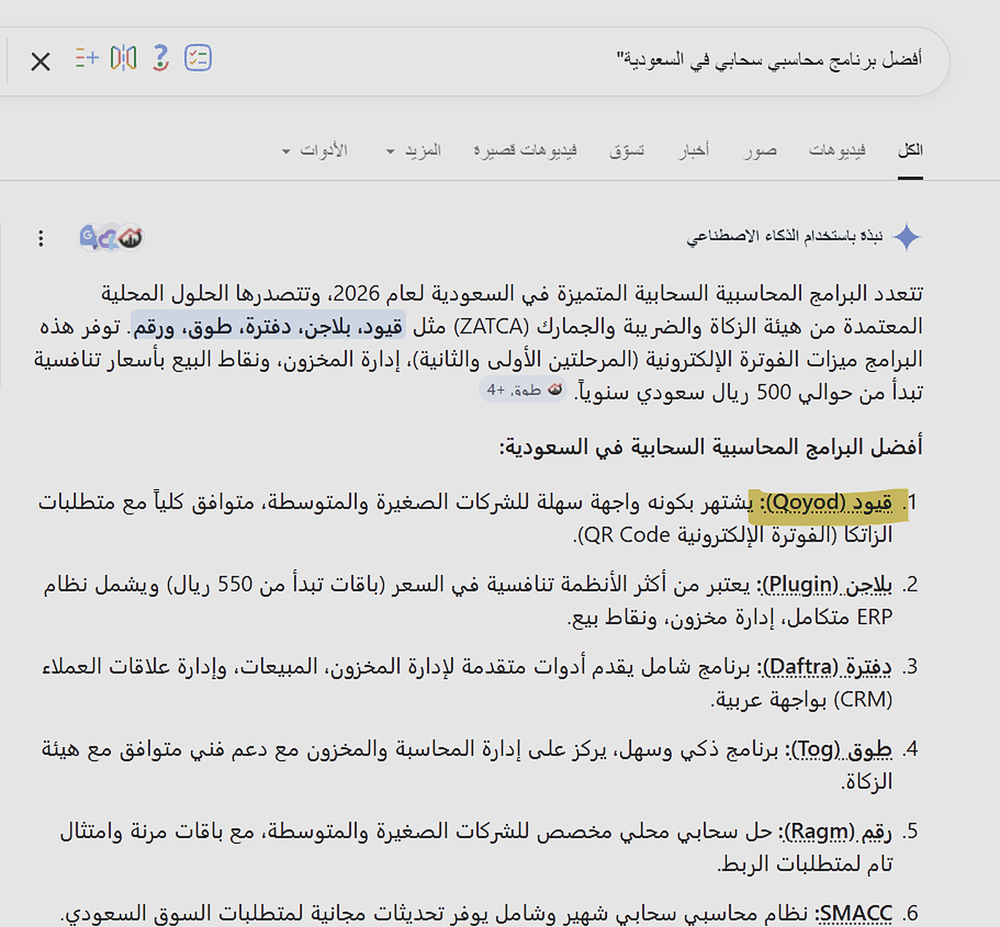
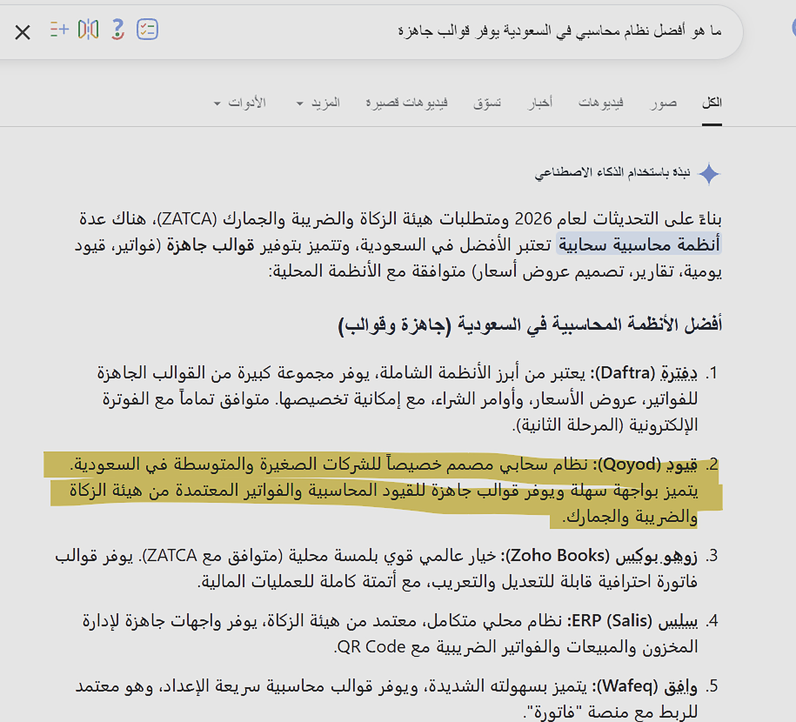

Qoyod: من نتائج البحث إلى إجابات الذكاء الاصطناعي
كيف أعدت هندسة نماذج Qoyod المحاسبية ومحتواها وفق GEO، فرتّبتها Google في أقل من 24 ساعة، وبدأت ChatGPT وGemini وGoogle AI Mode توصي بـQoyod بالاسم.
محتوى محاسبي ممتاز لا يستطيع الذكاء الاصطناعي اقتباسه
كانت مدونة Qoyod غنية بالمعرفة المحاسبية، لكنها جاءت على شكل مقالات طويلة. وجدت محركات الإجابة صعوبة في تلخيصها أو في استخراج جواب واضح وحاسم منها.
بطء الفهرسة
كان المحتوى الجديد يحتاج أسابيع ليظهر، ولم تقدّم المقالات الطويلة لمحركات الذكاء الاصطناعي شيئًا موجزًا تقتبسه.
النماذج كإجابات فورية
النماذج المحاسبية هي بالضبط ما يريده المستخدمون الآن. وإذا بُنيت جيدًا أصبحت وسائل جذب عملاء سريعة وأصولًا معرفية قابلة للاقتباس.
GEO مطبّقًا عبر ثلاث ركائز
بنية قابلة للاقتباس
أعدت كتابة مقدمات المقالات وملخصاتها لتكون موجزة ومباشرة، فتستطيع ChatGPT وGemini اقتباسها كتعريفات. وحوّلت البيانات المعقدة إلى قوائم وجداول قائمة على الأرقام.
هندسة صفحات النماذج
صممت كل صفحة نموذج كأصل معرفي لا كصفحة تحميل فقط، مع بيانات Schema تخبر Google أنها أداة وليست نصًا عاديًا.
تحسين الفهرسة
ربطت المحتوى الجديد ببنية روابط داخلية قوية، لتصل إليه زواحف الذكاء الاصطناعي ومحركات البحث لحظة نشره.
ترتيب في ساعات. واقتباس من الذكاء الاصطناعي.
فهرسة بلا تأخير
فُهرس المحتوى التقني تقريبًا فورًا بفضل تحسين البيانات الوصفية والبيانات المنظمة.
قابلية الاقتباس من الذكاء الاصطناعي
يظهر محتوى Qoyod الآن كإجابة نموذجية (مقتطف مميز) للأسئلة المحاسبية المباشرة، مما رفع سلطته الموضوعية.
الظهور في محركات الإجابة التوليدية
تظهر Qoyod كإجابة مقتبسة للمصطلحات المحاسبية المتخصصة في Perplexity وGemini، بنسبة تقديرية تصل إلى 70%.
حجم بيانات Search Console
3.1 مليون نقرة و108.3 مليون ظهور خلال 16 شهرًا من بيانات Google Search Console.
ما تعرضه Google ومحركات الذكاء الاصطناعي فعليًا
عمليات بحث عربية حقيقية، التُقطت من Google وGoogle AI Mode وGemini وChatGPT. انقر على أي لقطة لتكبيرها.

يحتل نموذج إدارة المخزون الاحترافي (Excel) من Qoyod المركز الأول، وقد نُشر قبل 18 ساعة فقط.

تأتي Qoyod في المركز الأول بين المواقع السعودية.

تذكر Gemini علامة Qoyod أولًا وتشرح توافقها مع متطلبات هيئة الزكاة والضريبة والجمارك (ZATCA).

تتصدر Qoyod القائمة.

يبرز AI Mode نماذج Qoyod الجاهزة للفواتير والسجلات المحاسبية.
النماذج المبنية كأصول معرفية، بنص قابل للاقتباس وبنية نظيفة، تربح مرتين: تحتل المراتب في ساعات، وتوصي محركات الذكاء الاصطناعي بالعلامة التي تقف خلفها.
هل تريد أن يوصي الذكاء الاصطناعي بعلامتك بالاسم؟
سأختبر كيف تجيب ChatGPT وGemini وGoogle AI Mode عن أسئلة مشتريك اليوم، وأريك ما يلزم لتصبح أنت الجواب.